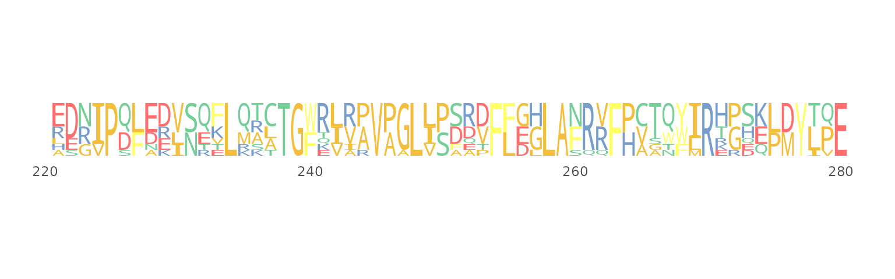
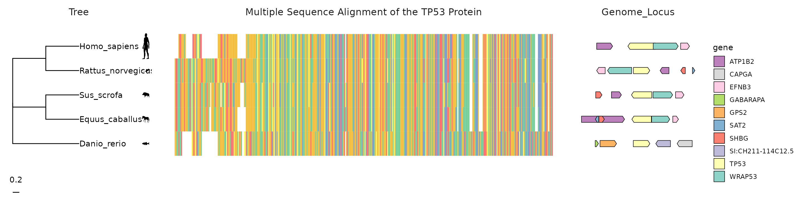

使用ggmsa可视化和探索多序列比对和相关数据
Lang Chau, Guangchuang Yu, Shuangbin Xu and Huina Huang
Nov 2021
Source:vignettes/workflow_ggmsa_Chinese.Rmd
workflow_ggmsa_Chinese.Rmd背景介绍
摘要
多序列比对(Multiple Sequence Alignment,MSA)常被用于探索比对序列中的保守区域和变 异区域。而堆叠图形(Stacked Graphs)是在探索过程中最常用的可视化方式。其以行表示 每条序列，以列表示相同位置的不同残基字符。我们开发的R包ggmsa扩展了这种堆叠形 式的可视化方法，并添加了更多可视化方法使用户能更好的观测到MSA的保守区域和变异区 域。另外，ggmsa结合ggtree和ggtreeExtra，可以在大分子层面，观察MSA与表型的 联系。总之，ggmsa可以为用户提供的更多的可视化手段，允许用户从不同角度探索序列 特征。


示例演示
使用不同的可视化方法探索MSA的保守性
堆叠图形
堆叠图形以行表示每条序列，以列表示相同位置的不同残基字符，并根据不同的残基属性， 为字符渲染不同的颜色。通过着色可以快速识别变化趋势。
plot

protein_sequences <- system.file("extdata", "sample.fasta", package = "ggmsa")
readAAMultipleAlignment(protein_sequences) output
#> AAMultipleAlignment with 9 rows and 456 columns
#> aln names
#> [1] MAAVVLENGVLSRKLSDFGQETSYIE...QLKILADSINSEVGILCNALQKIKS PH4H_Rattus_norve...
#> [2] MAAVVLENGVLSRKLSDFGQETSYIE...QLKILADSINSEVGILCHALQKIKS PH4H_Mus_musculus
#> [3] MSTAVLENPGLGRKLSDFGQETSYIE...QLKILADSINSEIGILCSALQKIK- PH4H_Homo_sapiens
#> [4] MSALVLESRALGRKLSDFGQETSYIE...QLKILADSISSEVEILCSALQKLK- PH4H_Bos_taurus
#> [5] --------------------------...LNAGDRQGWADTEDV---------- PH4H_Chromobacter...
#> [6] --------------------------...LNAGTREGWADTADI---------- PH4H_Ralstonia_so...
#> [7] --------------------------...LTRGT-QAYATAGGRLAGAAAG--- PH4H_Caulobacter_...
#> [8] --------------------------...------------------------- PH4H_Pseudomonas_...
#> [9] --------------------------...------------------------- PH4H_Rhizobium_loti
ggmsa(protein_sequences,
start = 221,
end = 280,
char_width = 0.5,
seq_name = TRUE,
border = NA)plot
ggmsa函数作为基础函数，接收的MSA数据，控制MSA的可视化范围，配色，字体等参数。 参数选择可以用available系列函数来查看。
available_colors()
#> 1.color schemes for nucleotide sequences currently available:
#> Chemistry_NT Shapely_NT Taylor_NT Zappo_NT
#> 2.color schemes for AA sequences currently available:
#> ClustalChemistry_AA Shapely_AA Zappo_AA Taylor_AA LETTER CN6 Hydrophobicity
available_fonts()
#> font families currently available:
#> helvetical mono TimesNewRoman DroidSansMono
available_msa()
#> 1.files currently available:
#> .fasta
#> 2.XStringSet objects from 'Biostrings' package:
#> DNAStringSet RNAStringSet AAStringSet BStringSet DNAMultipleAlignment RNAMultipleAlignment AAMultipleAlignment
#> 3.bin objects:
#> DNAbin AAbin堆叠图形中的注释模块
注释系统也是ggmsa中的一大亮点。类似于ggplot2中图形语法，我们使用 ggmsa() + geom_*()的模式添加注释。不同的geom图层对应不同的注释方法。
ggmsa(protein_sequences,
start = 221,
end = 280,
char_width = 0.5,
seq_name = TRUE) +
geom_seqlogo() +
geom_msaBar()plot

| Annotation modules | Type | Description |
|---|---|---|
| geom_seqlogo() | geometric layer | automatically generated sequence logos for a MSA |
| geom_seed() | annotation module | highlights seed region on miRNA sequences |
| geom_msaBar() | annotation module | shows sequences conservation by a bar chart |
| geom_helix() | annotation module | depicts RNA secondary structure as arc diagrams(need extra data) |
注释模块还可以接收外部数据。RNA的二级结构可以以弧线图的形式添加到MSA。 弧线连接的两个MSA位置表示在结构上是配对的。
使用ggmsa() + geom_helix()的模式可以将二级结构数据整合到MSA图形中。
RNA7S <- "data/3JAJ-2D-dotbracket.txt"
RNAP54 <- "data/4UJE-2D-dotbracket.txt"
RF03120_msa<- system.file("extdata", "Rfam", "RF03120.fasta", package = "ggmsa")
RF03120_ss <- system.file("extdata", "Rfam", "RF03120_SS.txt", package = "ggmsa")
known <- readSSfile(RNA7S, type = "Vienna" )
transat <- readSSfile(RNAP54 , type = "Vienna")
RF_arc <- readSSfile(RF03120_ss, type = "Vienna" )
p7A <- ggmsa(RF03120_msa,
font = NULL,
color = "Chemistry_NT",
seq_name = F,
show.legend = F,
border = NA) +
geom_helix(helix_data = RF_arc) +
theme(axis.text.y = element_blank())
p7B <- ggmsa("data/5SRNA.fa",
font = NULL,
color = "Chemistry_NT",
seq_name = T,
show.legend = T,
border = NA) +
geom_helix(helix_data = list(known = known,
predicted = transat),
overlap = F)
p7 <- plot_list(gglist = list(p7A, p7B),
ncol = 1,
heights = c(0.15),
tag_levels = 'A')
p7plot
堆叠图形中的布局
除了不同的注释图层，我们还为堆叠图形设计不同的布局
# 4 fields
ggmsa(protein_sequences, start = 0, end = 400, font = NULL, color = "Chemistry_AA") +
facet_msa(field = 100)plot

Sequence bundle
Sequence bundles可视化方法在2013年BioVis设计竞赛中被引入，以探索序列之间的残基 关系。MSA的序列被描绘成不间断的、半不透明的线。每条线代表一个序列。 因此整个MSA以序列束的形式被绘制，在y轴上的序列字母表示不同的残基符号并根据不同 的生化特性排序。x轴上代表序列位置。plot

ggmsa中用ggSeqBundle函数来把MSA可视化为Sequence bundles.最简单的方法是 ggSeqBundle(msa_data)。
下列数据包括革兰氏阳性菌和革兰氏阴性菌的腺苷酸激酶盖(Adenylate Kinase Lid, AKL) 结构域。每组各100条序列。 阳性菌在形成半胱氨酸(Cystine)四联体；阴性菌形成氢键网络， (His4, Ser7, Arg9, Asp24, Thr27, Glu29)
plot

(Date from BioVis2013 and repeated example from Science Practice)
Sequence logo
Sequence logo可视化方法计算了MSA中每列字符的的频率，并把每列的字符根据频率缩放， 进行堆叠。
plot

ggmsa中的Sequence logo可以作为注释图层添geom_seqlogo添加到堆叠图形中。
ggmsa(protein_sequences, 221, 280, seq_name = TRUE, char_width = 0.5, font = NULL) +
geom_seqlogo(color = "Chemistry_AA") plot
也可以用seqlogo函数进行单独的渲染。使用方法与ggmsa相似，可是通过参数控制位置， 配色和字体。patchwork包可以把sequqnce logos 和 sequence bundles组合起来。
seqlogo(protein_sequences, 221, 280)plot

序列的中特殊的变异
除了通过可视化方法探索MSA的保守性,ggmsa还设计专门的可视化方法来观测序列中特殊 的变异位点。为鉴定序列中的潜在的重组信号提供线索。
plot

选择一个潜在序列(query)，seqdiff可以计算query和其他序列在每个位置上是否存在 核苷酸差异。并把固定区域的差异数目以柱状图的形式展示(plot(seqdiff))。
同理，用simplot函数计算序列间的相似性。例如：CF_YL21 vs Mont,Oz and Wilg5
fas <- list.files(system.file("extdata", "GVariation", package="ggmsa"),
pattern="fas", full.names=TRUE)
xx <- lapply(fas, seqdiff)
plts <- lapply(xx, plot, width = 100)
fas[4] <- system.file("extdata/GVariation/sample_alignment.fa",
package="ggmsa")# + theme(legend.position = "bottom")
plts[[4]] <- simplot(fas[4], 'CF_YL21')
plot_list(gglist=plts, ncol=1, tag_levels = list(c("A",' ',"B", ' ',"C", ' ', "D")))plot
探索MSA和相关数据的联系
通过ggtree或者ggtreeExtra分面功能，形成Tree-MSA-External 的图形结构， 从可视化的角度观察MSA和特殊的表型之间的联系。 
通过ggtree(tree) + geom_facet(geom_msa) + geom_facet(ohters)或者 ggtree(tree) + geom_fruit(geom_msa) + geom_fruit(others)的代码模式来整合外部 数据。
#load MSA and genes locus
tp53_sequences <- system.file("extdata", "tp53.fa", package = "ggmsa")
tp53_genes <- system.file("extdata", "TP53_genes.xlsx", package = "ggmsa")
#generating phylogenetic tree according to MSA
dat <- read.aa(tp53_sequences, format = "fasta") %>% phyDat(type = "AA", levels = NULL)
tree <- dist.ml(dat, model = "JTT") %>% bionj()
dd <- ggimage::phylopic_uid(tree$tip.label)
#visualizing phylogenetic tree by ggtree
p_tp53 <- ggtree(tree, branch.length = 'none') %<+% dd +
geom_tiplab(aes(image=uid), geom = "phylopic", offset =1.9) +
geom_tiplab(aes(label=label)) +
geom_treescale(x = 0,y = -1)
#deal with MSA data
data_53 <- readAAMultipleAlignment(tp53_sequences) %>% tidy_msa()
#gene maps
TP53_arrow <- read_xlsx(tp53_genes)
TP53_arrow$direction <- 1
TP53_arrow[TP53_arrow$strand == "reverse","direction"] <- -1
#color
mapping = aes(xmin = start, xmax = end, fill = gene, forward = direction)
my_pal <- colorRampPalette(rev(brewer.pal(n = 10, name = "Set3")))
#tree + gene maps + msa
p6a <- p_tp53 + xlim_tree(4) +
geom_facet(geom = geom_msa, data = data_53,
panel = 'Multiple Sequence Alignment of the TP53 Protein', font = NULL,
border = NA) +
new_scale_fill() +
scale_fill_manual(values = my_pal(10)) +
geom_facet(geom = geom_motif,
mapping = mapping, data = TP53_arrow,
panel = 'Genome_Locus', on = 'TP53',
arrowhead_height = unit(3, "mm"),
arrowhead_width = unit(1, "mm")) +
theme(strip.background=element_blank(),
strip.text = element_text(size = 13))
p6A <- facet_widths(p6a, c(Tree = 0.35, Genome_Locus = 0.3))
p6Aplot

总结
可视化探索MSA是分子生物学的重要内容，但在堆叠的MSA图形中表现并不佳。我们开发的R 包ggmsa，用于可视化地探索MSA和相关数据。它包含一系列通用MSA可视化方法，并通过将 多个相关数据集成到堆叠MSA图形中，扩展了堆叠MSA可视化方法的使用范围。堆叠的MSA图形 集成多个外部数据，在视觉层面探索序列特征的相关性。因此，将不同类型的外部数据与 MSA相结合，可以观察到不同的相关性。对同一个MSA数据采用多种可视化方法，可以从不同 角度探索序列特征。ggmsa中的sequence logos和sequece bundles能快速识别出MSA中的 sequence pattern和残基相关性。最后的碱基差异性和相似性图谱，用于鉴定序列重组事件。 因此，ggmsa代表了对以前拓展性受限的堆叠可视化方法的和可视化方法应用单一的工具的 实质性改进。
8. Session information
以下是本次workshop中系统，R版本以及使用的包的信息：
output
#> R version 4.1.1 (2021-08-10)
#> Platform: x86_64-pc-linux-gnu (64-bit)
#> Running under: Ubuntu 20.04.3 LTS
#>
#> Matrix products: default
#> BLAS/LAPACK: /usr/lib/x86_64-linux-gnu/openblas-pthread/libopenblasp-r0.3.8.so
#>
#> locale:
#> [1] LC_CTYPE=en_US.UTF-8 LC_NUMERIC=C
#> [3] LC_TIME=en_US.UTF-8 LC_COLLATE=en_US.UTF-8
#> [5] LC_MONETARY=en_US.UTF-8 LC_MESSAGES=C
#> [7] LC_PAPER=en_US.UTF-8 LC_NAME=C
#> [9] LC_ADDRESS=C LC_TELEPHONE=C
#> [11] LC_MEASUREMENT=en_US.UTF-8 LC_IDENTIFICATION=C
#>
#> attached base packages:
#> [1] stats4 stats graphics grDevices utils datasets methods
#> [8] base
#>
#> other attached packages:
#> [1] kableExtra_1.3.4 dplyr_1.0.7 RColorBrewer_1.1-2
#> [4] ggnewscale_0.4.5 Biostrings_2.62.0 GenomeInfoDb_1.30.0
#> [7] XVector_0.34.0 IRanges_2.28.0 S4Vectors_0.32.0
#> [10] BiocGenerics_0.40.0 readxl_1.3.1 ggtree_3.2.0
#> [13] ggimage_0.3.0 phangorn_2.7.1 ape_5.5
#> [16] aplot_0.1.1 ggplot2_3.3.5 ggmsa_1.0.0
#>
#> loaded via a namespace (and not attached):
#> [1] nlme_3.1-153 bitops_1.0-7 fs_1.5.0
#> [4] webshot_0.5.2 httr_1.4.2 ash_1.0-15
#> [7] rprojroot_2.0.2 tools_4.1.1 utf8_1.2.2
#> [10] R6_2.5.1 KernSmooth_2.23-20 lazyeval_0.2.2
#> [13] colorspace_2.0-2 withr_2.4.2 tidyselect_1.1.1
#> [16] ggalt_0.4.0 curl_4.3.2 compiler_4.1.1
#> [19] extrafontdb_1.0 rvest_1.0.2 textshaping_0.3.6
#> [22] xml2_1.3.2 desc_1.4.0 labeling_0.4.2
#> [25] scales_1.1.1 proj4_1.0-10.1 quadprog_1.5-8
#> [28] pkgdown_1.6.1 systemfonts_1.0.3 stringr_1.4.0
#> [31] digest_0.6.28 yulab.utils_0.0.4 R4RNA_1.22.0
#> [34] svglite_2.0.0 rmarkdown_2.11 pkgconfig_2.0.3
#> [37] htmltools_0.5.2 extrafont_0.17 highr_0.9
#> [40] fastmap_1.1.0 maps_3.4.0 rlang_0.4.12
#> [43] rstudioapi_0.13 gridGraphics_0.5-1 jquerylib_0.1.4
#> [46] farver_2.1.0 generics_0.1.1 jsonlite_1.7.2
#> [49] RCurl_1.98-1.5 magrittr_2.0.1 ggplotify_0.1.0
#> [52] GenomeInfoDbData_1.2.7 patchwork_1.1.1 Matrix_1.3-4
#> [55] Rcpp_1.0.7 munsell_0.5.0 fansi_0.5.0
#> [58] ggfittext_0.9.1 lifecycle_1.0.1 stringi_1.7.5
#> [61] yaml_2.2.1 seqmagick_0.1.5 MASS_7.3-54
#> [64] zlibbioc_1.40.0 grid_4.1.1 parallel_4.1.1
#> [67] crayon_1.4.2 lattice_0.20-45 magick_2.7.3
#> [70] knitr_1.36 pillar_1.6.4 igraph_1.2.7
#> [73] codetools_0.2-18 fastmatch_1.1-3 glue_1.4.2
#> [76] evaluate_0.14 ggfun_0.0.4 vctrs_0.3.8
#> [79] treeio_1.18.0 tweenr_1.0.2 gggenes_0.4.1
#> [82] cellranger_1.1.0 Rttf2pt1_1.3.9 gtable_0.3.0
#> [85] purrr_0.3.4 polyclip_1.10-0 tidyr_1.1.4
#> [88] cachem_1.0.6 xfun_0.27 ggforce_0.3.3
#> [91] tidytree_0.3.5 viridisLite_0.4.0 ragg_1.2.0
#> [94] tibble_3.1.5 memoise_2.0.0 ellipsis_0.3.2